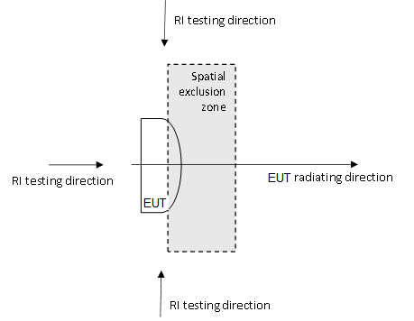

Technical Specification Group Radio Access Network;
NR;
Base Station (BS) ElectroMagnetic Compatibility (EMC)
(Release 17)
The present document has been developed within the 3rd
Generation Partnership Project (3GPP TM) and may be further
elaborated for the purposes of 3GPP.
The present document has not been subject to any approval process by the
3GPP Organizational Partners and shall not be implemented.
This Specification is provided for future development work within 3GPP
only. The Organizational Partners accept no liability for any use of
this Specification.
Specifications and Reports for implementation of the 3GPP TM
system should be obtained via the 3GPP Organizational Partners'
Publications Offices.
3GPP
Postal address
3GPP support office address
650 Route des Lucioles - Sophia Antipolis
Valbonne - FRANCE
Tel.: +33 4 92 94 42 00 Fax: +33 4 93 65 47 16
Internet
http://www.3gpp.org
Copyright
Notification
No part may be reproduced except as authorized by written
permission.
The copyright and the foregoing restriction extend to reproduction in
all media.
UMTS™ is a Trade Mark of ETSI registered for the benefit of its
members
3GPP™ is a Trade Mark of ETSI registered for the benefit of its
Members and of the 3GPP Organizational Partners
LTE™ is a Trade Mark of ETSI registered for the benefit of its Members
and of the 3GPP Organizational Partners
GSM® and the GSM logo are registered and owned by the GSM
Association
This Technical Specification has been produced by the 3rd Generation
Partnership Project (3GPP).
The contents of the present document are subject to continuing work
within the TSG and may change following formal TSG approval. Should the
TSG modify the contents of the present document, it will be re-released
by the TSG with an identifying change of release date and an increase in
version number as follows:
Version x.y.z
where:
x the first digit:
1 presented to TSG for information;
2 presented to TSG for approval;
3 or greater indicates TSG approved document under change
control.
y the second digit is incremented for all changes of substance, i.e.
technical enhancements, corrections, updates, etc.
z the third digit is incremented when editorial only changes have
been incorporated in the document.
In the present document, modal verbs have the following meanings:
shall indicates a mandatory requirement to do
something
shall not indicates an interdiction (prohibition) to
do something
The constructions "shall" and "shall not" are confined to the context
of normative provisions, and do not appear in Technical Reports.
The constructions "must" and "must not" are not used as substitutes
for "shall" and "shall not". Their use is avoided insofar as possible,
and they are not used in a normative context except in a direct citation
from an external, referenced, non-3GPP document, or so as to maintain
continuity of style when extending or modifying the provisions of such a
referenced document.
should indicates a recommendation to do
something
should not indicates a recommendation not to do
something
may indicates permission to do something
need not indicates permission not to do
something
The construction "may not" is ambiguous and is not used in normative
elements. The unambiguous constructions "might not" or "shall not" are
used instead, depending upon the meaning intended.
can indicates that something is possible
cannot indicates that something is impossible
The constructions "can" and "cannot" are not substitutes for "may"
and "need not".
will indicates that something is certain or expected
to happen as a result of action taken by an agency the behaviour of
which is outside the scope of the present document
will not indicates that something is certain or
expected not to happen as a result of action taken by an agency the
behaviour of which is outside the scope of the present document
might indicates a likelihood that something will
happen as a result of action taken by some agency the behaviour of which
is outside the scope of the present document
might not indicates a likelihood that something will
not happen as a result of action taken by some agency the behaviour of
which is outside the scope of the present document
In addition:
is (or any other verb in the indicative mood)
indicates a statement of fact
is not (or any other negative verb in the indicative
mood) indicates a statement of fact
The constructions "is" and "is not" do not indicate requirements.
1 Scope
The present document covers the assessment of NR and NR with NB-IoT
in-band operation Base Station (BS) and ancillary equipment in respect
of Electromagnetic Compatibility (EMC).
The present document specifies the applicable requirements,
procedures, test conditions, performance assessment and performance
criteria for NR and NR with NB-IoT in-band operation base stations and
associated ancillary equipment in the following categories:
- BS equipped with antenna connectors or TAB connectors
which are possible to be terminated during EMC testing, meeting the
BS type 1-C and BS type1-H RF requirements
of TS 38.104 [2], with conformance demonstrated by compliance to TS
38.141-1 [3].
- BS not equipped with antenna connectors nor TAB
connectors, i.e. with antenna elements radiating during the EMC
testing, meeting the BS type 1-O and BS type2-O RF requirements of TS 38.104 [2], with conformance
demonstrated by compliance to TS 38.141-2 [4].
Technical requirements related to the antenna and TAB connectors are
not included in the present document. These are found in the relevant
product standards [2-4].
The environment classification used in the present document refers to
the residential, commercial and light industrial environment
classification used in IEC 61000‑6-1 [7], IEC 61000-6-3 [8] and IEC
61000-6-8 [33].
The EMC requirements have been selected to ensure an adequate level
of compatibility for apparatus at residential, commercial and light
industrial environments. The levels, however, do not cover extreme cases
which may occur in any location but with low probability of
occurrence.
2 References
The following documents contain provisions which, through reference
in this text, constitute provisions of the present document.
- References are either specific (identified by date of publication,
edition number, version number, etc.) or non‑specific.
- For a specific reference, subsequent revisions do not apply.
- For a non-specific reference, the latest version applies. In the
case of a reference to a 3GPP document (including a GSM document), a
non-specific reference implicitly refers to the latest version of that
document in the same Release as the present document.
[1] 3GPP TR 21.905: "Vocabulary for 3GPP Specifications".
[2] 3GPP TS 38.104: "NR; Base Station (BS) radio transmission and
reception".
[3] 3GPP TS 38.141-1: "NR; Base Station (BS) conformance testing Part
1: Conducted conformance testing".
[4] 3GPP TS 38.141-2: "NR; Base Station (BS) conformance testing Part
2: Radiated conformance testing".
[5] 3GPP TS 37.113: "E-UTRA, UTRA and GSM/EDGE; Multi-Standard Radio
(MSR) Base Station (BS) Electromagnetic Compatibility (EMC)".
[6] 3GPP TS 37.114: "Active Antenna System (AAS) Base Station (BS)
Electromagnetic Compatibility (EMC)".
[7] IEC 61000-6-1: "Electromagnetic compatibility (EMC) - Part 6-1:
Generic standards - Immunity for residential, commercial and
light-industrial environments".
[8] IEC 61000-6-3: "Electromagnetic compatibility (EMC) - Part 6-3:
Generic standards - Emission standard for equipment in residential
environments".
[13] IEC 61000-3-2: "Electromagnetic compatibility (EMC) - Part 3-2:
Limits - Limits for harmonic current emissions (equipment input current
≤ 16 A per phase)".
[14] IEC 61000-3-12: "Electromagnetic compatibility (EMC) - Part
3-12: Limits - Limits for harmonic currents produced by equipment
connected to public low-voltage system with input current >16 A and ≤
75 A per phase".
[15] IEC 61000-3-3: "Electromagnetic compatibility (EMC) - Part 3-3:
Limits - Limitation of voltage changes, voltage fluctuations and flicker
in low-voltage supply systems, for equipment with rated current ≤ 16 A
per phase and not subject to conditional connection".
[16] IEC 61000-3-11: "Electromagnetic compatibility (EMC) - Part
3-11: Limits – Limitation of voltage changes, voltage fluctuations and
flicker in low-voltage supply systems - Equipment with rated current ≤
75 A and subject to conditional connections".
[17] IEC 61000-4-2: "Electromagnetic compatibility (EMC) - Part 4-2:
Testing and measurement techniques - Electrostatic discharge immunity
test".
[18] IEC 61000-4-3:2006+AMD1:2007+AMD2:2010 CSV: "Electromagnetic
compatibility (EMC) - Part 4-3: Testing and measurement techniques -
Radiated, radio-frequency, electromagnetic field immunity test".
[19] IEC 61000-4-4: "Electromagnetic compatibility (EMC) - Part 4-4:
Testing and measurement techniques - Electrical fast transient/burst
immunity test".
[20] IEC 61000-4-5: "Electromagnetic compatibility (EMC) - Part 4-5:
Testing and measurement techniques - Surge immunity test".
[21] IEC 61000-4-6: "Electromagnetic compatibility (EMC) - Part 4-6:
Testing and measurement techniques - Immunity to conducted disturbances,
induced by radio frequency fields".
[22] IEC 61000-4-11: "Electromagnetic compatibility (EMC) - Part
4-11: Testing and measurement techniques - Voltage dips, short
interruptions and voltage variations immunity tests".
[23] ETSI EN 301 489-1: "ElectroMagnetic Compatibility (EMC) standard
for radio equipment and services; Part 1: Common technical requirements;
Harmonised Standard covering the essential requirements of article
3.1(b) of Directive 2014/53/EU and the essential requirements of article
6 of Directive 2014/30/EU".
[24] Recommendation ITU-R SM.329-12: "Unwanted emissions in the
spurious domain".
[25] 3GPP TS 37.105: "Active Antenna System (AAS) Base Station (BS)
transmission and reception".
[26] Recommendation ITU-R SM.1539-1: "Variation of the boundary
between the out-of-band and spurious domains required for the
application of Recommendations ITU-R SM.1541 and ITU-R SM.329".
[27] 3GPP TS 38.101-4: "NR; User Equipment (UE) radio transmission
and reception; Part 4: Performance requirements".
[28] ETSI EN 301 489-50: "Electromagnetic compatibility (EMC)
standard for radio equipment and services; Part 50: Specific conditions
for cellular communication base station (BS), repeater and ancillary
equipment; Harmonised standard covering the essential requirements of
article 3.1(b) of the Directive 2014/53/EU".
[29] IEC 61000-4-21: "Electromagnetic compatibility (EMC) - Part
4-21: Testing and measurement techniques - Reverberation chamber test
methods".
[30] CISPR 16-1-4: 2019-01: "Specification for radio disturbance and
immunity measuring apparatus and methods – Part 1-4: Radio disturbance
and immunity measuring apparatus – Antennas and test sites for radiated
disturbance measurements"
[31] CISPR 16-4-2: " Specification for radio disturbance and immunity
measuring apparatus and methods - Part 4-2: Uncertainties, statistics
and limit modelling - Measurement instrumentation uncertainty, Amendment
2"
[32] ETSI TR 100 028-1: "Electromagnetic compatibility and Radio
spectrum Matters (ERM); Uncertainties in the measurement of mobile radio
equipment characteristics, part 1"
[33] IEC 61000-6-8:"Electromagnetic compatibility (EMC) - Part 6-8:
Generic standards - Emission standard for professional equipment in
commercial and light-industrial locations".
3 Definitions, symbols
and abbreviations
3.1 Definitions
For the purposes of the present document, the terms and definitions
given in TR 21.905 [1] and the following apply. A term defined in the
present document takes precedence over the definition of the same term,
if any, in TR 21.905 [1].
ancillary equipment: electrical or electronic
equipment, that is intended to be used with a receiver or
transmitter
NOTE: It is considered as an ancillary equipment if:
the equipment is intended for use with a receiver or transmitter to
provide additional operational and/or control features to the radio
equipment, (e.g. to extend control to another position or location);
and
the equipment cannot be used on a stand alone basis to provide user
functions independently of a receiver or transmitter; and
the receiver or transmitter, to which it is connected, is capable of
providing some intended operation such as transmitting and/or receiving
without the ancillary equipment (i.e. it is not a sub-unit of the main
equipment essential to the main equipment basic functions).
antenna port: for EMC purposes, port for connection
of an antenna used for intentional transmission and/or reception of
radiated RF energy, equivalent to an RF antenna connector/TAB
connector in TS 37.105 [25].
BS type 1-C: NR base station operating at FR1 with
requirements set consisting only of conducted requirements defined at
individual antenna connectors.
BS type 1-H: NR base station operating at FR1 with a
requirement set consisting of conducted requirements defined at
individual TAB connectors and OTA requirements defined at
RIB.
BS type 1-O: NR base station operating at FR1 with a
requirement set consisting only of OTA requirements defined at the
RIB.
BS type 2-O: NR base station operating at FR2 with a
requirement set consisting only of OTA requirements defined at the
RIB.
channel bandwidth: the RF bandwidth supporting a
single NR RF carrier with the transmission bandwidth configured in the
uplink or downlink of a cell. The channel bandwidth is measured
in MHz and is used as a reference for transmitter and receiver RF
requirements.
continuous phenomena: electromagnetic disturbance,
the effects of which on a particular device or equipment cannot be
resolved into a succession of distinct effects (IEC 60050-161 [9]).
enclosure port: physical boundary of the equipment
through which electromagnetic fields may radiate or impinge.
NOTE: In the case of integral antenna equipment, this port
is inseparable from the antenna port.
exclusion band: frequency range(s) not subject to
test or assessment.
free-space open area test site: reference test site
with precautions to ensure that reflections do not influence the
measurement.
NOTE: The free-space open area test site (FSOATS) is the concept of
the test site. A practical approximation is a Fully-Anechoic Room
(FAR).
fully-anechoic room: shielded enclosure, the
internal surfaces of which are lined with radio-frequency-energy
absorbing material (i.e. RF absorber) that absorbs electromagnetic
energy in the frequency range of interest.
integral antenna: antenna designed for permanent
connection to the equipment and considered part of the enclosure
port.
NOTE: An integral antenna may be fitted internally or
externally.
lower RF bandwidth edge: the frequency of the lower
edge of the Base Station RF bandwidth, used as a frequency reference
point for transmitter and receiver requirements.
NB-IoT operation in NR in-band: NB-IoT is operating
in-band when it is located within a NR transmission bandwidth
configuration plus 15 kHz at each edge but not within the NR minimum
guard band GBChannel.
NB-IoT operation in NR guard band: NB-IoT is
operating in guard band when it is located within a NR BS channel
bandwidth but is not NB-IoT operation in NR in-band.
operating band: frequency range in which NR operates
(paired or unpaired), that is defined with a specific set of technical
requirements.
port: particular interface of EUT used for EMC
requirements testing purposes.
NOTE: Any connection point on EUT intended for connection of cables
to or from EUT during the EMC testing is considered as a port.
EXAMPLE 1: Examples of ports for BS type 1-C and BS type
1-H are as presented in figure 3.1‑1:
Figure 3.1-1: Examples of ports for BS type 1-C and
BS type 1-H
EXAMPLE 2: Examples of ports for BS type 1-O and BS type
2-O (i.e. with no antenna ports) are as presented in
figure 3.1-2:
Figure 3.1-2: Examples of ports for BS type 1-O and
BS type 2-O
receiver exclusion band: band of frequencies over
which no tests of radiated immunity of a receiver are made, and
expressed relative to the BS receive band.
semi-anechoic chamber: shielded enclosure in which
all surfaces except the metal floor are covered with material that
absorbs electromagnetic energy (i.e. RF absorber) in the frequency range
of interest.
signal port: port intended for the interconnection
of components of an EUT, or between an EUT and associated equipment and
used in accordance with relevant functional specifications (for example
for the maximum length of cable connected to it).
spatial exclusion zone: range of angles where no
tests of radiated immunity are made for BS type 1-O or BS
type 2-O (i.e. half sphere around the EUT's radiating
direction).
Throughput: number of payload bits successfully
received per second for a reference measurement channel in a specified
reference condition.
transceiver array boundary: conducted interface
between the transceiver unit array and the composite
antenna.
transceiver unit: active unit consisting of
transmitter and/or receiver which transmits and/or receives radio
signals, and which may include passive RF filters.
telecommunication port: ports which are intended to
be connected to telecommunication networks (e.g. public switched
telecommunication networks, integrated services digital networks), local
area networks (e.g. Ethernet, Token Ring) and similar networks.
NOTE: Telecommunication port is called "wired network port"
in CISPR 32 [11] and ETSI EN 301 489-1 [23].
transient phenomena: pertaining to or designating a
phenomena or a quantity which varies between two consecutive steady
states during a time interval short compared with the time-scale of
interest (IEC 60050-161 [9]).
transmitter exclusion band: band of frequencies over
which no tests of radiated immunity of a transmitter are made and is
expressed relative to the carrier frequencies used (the carrier
frequencies of the base stations activated transmitter(s)).
upper RF bandwidth edge: the frequency of the upper
edge of the Base Station RF bandwidth, used as a frequency reference
point for transmitter and receiver requirements.
3.2 Symbols
For the purposes of the present document, the following symbols
apply:
β Bandwidth
BWChannel Channel bandwidth
ΔfOBUE Maximum offset of the operating band
unwanted emissions mask from the downlink operating band
edge
ΔfOOB Maximum offset of the out-of-band boundary from the
uplink operating band edge
FDL,low The lowest frequency of the downlink operating
band
FDL,high The highest frequency of the downlink
operating band
FUL,low The lowest frequency of the uplink operating
band
FUL,high The highest frequency of the uplink operating
band
ΔfRIexclusion Maximum offset of the Radiated Immunity
exclusion band from the uplink operating band edge for test
without spatial exclusion zone applied
3.3 Abbreviations
For the purposes of the present document, the abbreviations given in
TR 21.905 [1] and the following apply. An abbreviation defined in the
present document takes precedence over the definition of the same
abbreviation, if any, in TR 21.905 [1].
AC Alternating Current
AMN Artificial Mains Network
BC Band Category
BS Base Station
CA Carrier Aggregation
CDN Coupling/Decoupling Network
CS Capability Set
DC Direct Current
EIRP Equivalent Isotropic Radiated Power
EMC Electromagnetic Compatibility
e.r.p. Effective Radiated Power
ESD Electrostatic Discharge
EUT Equipment Under Test
FR Frequency Range
FAR Fully-Anechoic Room
FRC Fixed Reference Channel
FSOATS Free Space OATS
NB-IoT Narrowband – Internet of Things
NC Non Contiguous
NG Next Generation
NGC Next Generation Core
NR New Radio
NR-ARFCN NR Absolute Radio Frequency Channel Number
NRTC NR Test Configuration
NTC Test Configuration for Non-contiguous operation
NSA Normalized Site Attenuation
OATS Open Area Test Site
RAT Radio Access Technology
RF Radio Frequency
RIB Radiated Interface Boundary
rms root mean square
RSM Reference Site Method
SAC Semi Anechoic Chamber
SC Single Carrier
SDL Supplementary Downlink
TC Test Configuration
UL Uplink
4 Test conditions
4.1 General
Requirements throughout the EMC specifications are in some cases
defined separately for different frequency ranges (FR). The frequency
ranges FR1 and FR2 are defined in subclause 5.1 of TS 38.104 [2].
The equipment shall be tested in normal test environment defined in
the corresponding BS conformance testing specification TS 38.141-1 [3]
for BS type 1-C and BS type 1-H, or TS 38.141-2 [4]
for BS type 1-O and BS type 2-O. The test conditions
shall be recorded in the test report.
For BS capable of multi-band operation, the requirements in the
present document apply for each supported operating band unless
otherwise stated. Operating bands shall be activated according
to the test configuration in subclause 4.5. Tests shall be performed
relating to each type of port and all operating bands shall be
assessed during the tests.
The manufacturer shall declare the supported operating
band(s) according to the list of NR operating bands
defined in TS 38.104 [2].
NOTE 1: NR operating bands for BS type 1-C and
BS type 1-H, are declared by the manufacturer according to the
declaration D.3 specified in TS 38.141-1 [3], table 4.6-1.
NOTE 2: NR operating bands for BS type 1-O and
BS type 2-O, are declared by the manufacturer according to the
declaration D.4 specified in TS 38.141-2 [4], table 4.6-1.
4.2
Arrangements for establishing a communication link
The wanted RF input signal nominal frequency shall be selected by
setting the NR Absolute Radio Frequency Channel Number (NR-ARFCN) to an
appropriate number, as defined in TS 38.104 [2], clause 5.4.2.3.
A communication link shall be set up with a suitable test system
capable of evaluating the required performance criteria (hereafter
called "the test system") at the radio interface and
telecommunication port(s) (the NG interface). The test system
shall be located outside of the test environment.
When the EUT is required to be in the transmit/receive mode, the
following conditions shall be met:
- For the BS type 1-C and BS type 1-H testing, the
EUT shall be commanded to operate at rated transmit power;
- For the BS type 1-O and BS type 2-O testing, the
EUT transmit power shall be configured as stated in subclause 8.1 for
emission test and subclause 9.1 for immunity test accordingly;
- Adequate measures shall be taken to avoid the effect of the
unwanted signal on the measuring equipment;
- The wanted input signal level shall be set to a level where the
performance is not limited by the receiver noise floor or strong signal
effects.
NOTE: 15 dB above the conducted reference sensitivity level has been
used as an example of wanted input signal level in legacy 3GPP EMC
specifications for establishing a communication link.
For immunity tests clause 4.3 shall apply and the conditions shall be
as follows.
4.3 Narrow band responses on
receivers
Responses on receivers or duplex transceivers occurring during the
immunity test at discrete frequencies which are narrow band responses
(spurious responses), are identified by the following method:
- if during an immunity test the quantity being monitored goes
outside the specified tolerances (clause 6), it is necessary to
establish whether the deviation is due to a narrow band response or to a
wide band (EMC) phenomenon. Therefore, the test shall be repeated with
the unwanted signal frequency increased, and then decreased by 2 x
BWChannel MHz, where BWChannel is the channel
bandwidth as defined in TS 38.104 [2], clause 5.3;
- if the deviation disappears in either one or both of the above MHz
offset cases, then the response is considered as a narrow band
response;
- if the deviation does not disappear, this may be due to the fact
that the offset has made the frequency of the unwanted signal correspond
to the frequency of another narrow band response. Under these
circumstances the procedure is repeated with the increase and decrease
of the frequency of the unwanted signal set to 2.5 x
BWChannel MHz;
- if the deviation does not disappear with the increased and/or
decreased frequency, the phenomenon is considered wide band and
therefore an EMC problem and the equipment fails the test.
For immunity test narrow band responses are disregarded.
For BS capable of multi-band operation, all supported operating
bands shall be considered for narrowband responses.
4.4 Exclusion bands
4.4.1 Transmitter exclusion
band
The transmitter exclusion band for BS is the frequency range
over which no tests of radiated immunity of a transmitter are made. The
transmitter exclusion band only applies to BS type 1-O.
The transmitter exclusion band is defined as:
FDL,low – ΔfOBUE<f < FDL,high
+ ΔfOBUE
Where:
Values of FDL,low and FDL,high are defined for
each operating band in TS 38.104 [2], clause 5.2.
The value of ΔfOBUE is derived considering the width of
the operating band, and is defined in TS 38.104 [2], subclause
6.6.1.
For BS capable of multi-band operation, the total transmitter
exclusion band is a combination of the exclusion bands for
each operating band supported by BS.
NOTE 1: The transmitter exclusion bands do not apply for SUL
bands.
NOTE 2: As the radiated immunity testing is defined in the frequency
range 80 MHz to 6 GHz, there is no transmitter exclusion band
defined for BS type 2-O.
4.4.2 Receiver exclusion band
The receiver exclusion band for BS is the frequency range
over which no tests of radiated immunity of a receiver are made.
The receiver exclusion band is defined as:
FUL,low – ΔfOOB<f < FUL,high +
ΔfOOB
Where:
Values of FUL,low and FUL,high are defined for
each operating band in TS 38.104 [2], clause 5.2.
The value of ΔfOOB is derived considering the width of the
operating band, and is defined in TS 38.104 [2], clause
7.4.2.2.
In case the spatial exclusion zone (as depicted in figure
9.2.2-1) is not used during the EMC RI testing, the receiver exclusion
band for BS type 1-O is defined as:
FUL,low – ΔfRIexclusion < f <
FUL,high + ΔfRIexclusion
Where the values of ΔfRIexclusion are defined in table
4.4.2-1.
Table 4.4.2-1: Maximum ΔfRIexclusion offset outside the
uplink operating band
Operating band characteristics
ΔfRIexclusion (MHz)
100 MHz ≥ FUL,high – FUL,low
60
100 MHz < FUL,high – FUL,low
200
For BS capable of multi-band operation, the total receiver
exclusion band is a combination of the exclusion bands for
each operating band supported by BS.
NOTE 1: The receiver exclusion bands do not apply for SDL
bands.
NOTE 2: As the radiated immunity testing is defined in the frequency
range 80 MHz to 6 GHz, there is no receiver exclusion band
defined for BS type 2-O.
4.5 BS test configurations
The present clause defines the BS test configurations that shall be
used for demonstrating conformance. A single NR carrier shall be used
for testing of single-carrier capable BS.
Single carrier configuration (SC) tests shall be performed using
signal with narrowest supported BS channel bandwidth with the
smallest supported subcarrier spacing declared per operating
band in TS 38.141-1 [3] clause 4.6, and TS 38.141-2 [4] clause
4.6.
For other NR base stations, the test configurations in table 4.5-1
and table 4.5-2 shall be used. The NR test configurations (NRTCx) are
defined in TS 38.141-1 [3], subclause 4.7 for BS type 1-C and
BS type 1-H and in TS 38.141-2 [4], subclause 4.7 for BS
type 1-O and BS type 2-O.
Table 4.5-1: Test configurations for BS type 1-C and BS
type 1-H
BS test case
BS capable of multi-carrier and/or CA in a single
band
BS capable of multi-band operation
Contiguous spectrum capable BS
C and NC capable BS with identical parameters
C and NC capable BS with different parameters
BS capable of multi-band operation with common connector
BS capable of multi-band operation with separate connector
Emission tests
NRTC1
NRTC3
NRTC1, NRTC3
NRTC1/3 (Note 1), NRTC5
NRTC1/3 (Note 1), NRTC5(Note 2)
Immunity tests
NRTC1
NRTC3
NRTC1, NRTC3
NRTC5
NRTC1/3 (Note 1), NRTC5(Note 3)
Note 1: NRTC1 and/or NRTC3 shall be applied in each
supported operating band.
Note 2: For single-band operation test, other antenna connector(s) is
(are) terminated.
Note 3: NRTC5 is only applicable for multi-band receiver.
Table 4.5-2: Test configurations for BS type 1-O
BS test
Single band RIB
Multi-band RIB
Contiguous spectrum capable BS
C and NC capable BS with identical parameters
C and NC capable BS with different parameters
Emission tests
NRTC1
NRTC3
NRTC1, NRTC3
NRTC1/3 (Note), NRTC5
Immunity tests
NRTC1
NRTC3
NRTC1, NRTC3
NRTC5
Note: NRTC1 and/or NRTC3 shall be applied in each
supported operating band.
Table 4.5-3: Test configurations for BS type 2-O
BS test case
Single band RIB
Contiguous spectrum capable BS
C and NC capable BS with identical parameters
C and NC capable BS with different parameters
Emission tests
NRTC1
NRTC3
NRTC1, NRTC3
Immunity tests
NRTC1
NRTC3
NRTC1, NRTC3
5 Performance assessment
5.1 General
The following information shall be recorded in or annexed to the test
report:
- the primary functions of the radio equipment to be tested during
and after the EMC testing;
- the intended functions of the radio equipment which shall be in
accordance with the documentation accompanying the equipment;
- the method to be used to verify that a communications link is
established and maintained;
- the user-control functions and stored data that are required for
normal operation and the method to be used to assess whether these have
been lost after EMC stress;
- the ancillary equipment to be combined with the radio
equipment for testing (where applicable);
- the information about ancillary equipment intended to be
used with the radio equipment;
- information about the common and/or band-specific active RF
components and other hardware blocks for a communication link in BS
capable of multi-band operation;
- an exhaustive list of ports (and RIBs), classified as either power
or signal/control. Power ports shall further be classified as AC or DC
power.
Performance assessment of a BS with multiple enclosures may be done
separately for the BS part with the Radio digital unit and the Radio
unit respectively, according to the manufacturer's choice.
A communication link used by more than one operating band,
shall be assessed on all operating bands. Communication link(s)
and/or radio performance parameters for the operating bands can
during the test be assessed simultaneously or separately for each band,
depending on the test environment capability.
5.2 Assessment of
throughput in Downlink
A communication link shall be established between the transmitter
(via port for the BS type 1-C and BS type 1-H, or via
RIB for the BS type 1-O and BS type 2-O) and the test
equipment. Test equipment shall meet the requirements for the throughput
assessment defined in TS 38.101-4 [27] for the bearer used in the
immunity tests. The level of the signal supplied to the equipment should
be within the range for which the assessment of throughput is not
impaired. Power control shall be OFF during the immunity testing.
5.3 Assessment of throughput
in Uplink
The value of the throughput at the output of the receiver shall be
monitored at NG interface by using suitable test equipment.
5.4 Ancillary equipment
At the manufacturer's discretion the test may be performed on the
ancillary equipment separately or on a representative
configuration of the combination of radio and ancillary
equipment. In each case EUT is tested against all applicable
immunity and emission clauses of the present document and in each case,
compliance enables the ancillary equipment to be used with
different radio equipment.
6 Performance criteria
6.1
Performance criteria for continuous phenomena for BS
The test should, where possible, be performed using a bearer with the
characteristics of data rate and throughput defined in table 6.1-1,
table 6.1-1a, table 6.1-1b and table 6.1-2. If the test is not performed
using one of these bearers (for example, of none of them are supported
by the BS), the characteristics of the bearer used shall be recorded in
the test report.
The throughput in table 6.1-1, table 6.1-1a, table 6.1-1b and table
6.1-2 is stated relative to the maximum throughput of the FRC.
The BS uplink and downlink paths shall each meet the performance
criteria defined in table 6.1-1, table 6.1-1a, table 6.1-1b and table
6.1-2 during the test. If the uplink and downlink paths are evaluated as
a one loop then the criteria is two times the throughput reduction shown
in table 6.1-1, table 6.1-1a, table 6.1-1b and table 6.1-2 (i.e.
throughput > 90 % instead of throughput > 95 %). After each test
case BS shall operate as intended with no loss of user control function,
stored data and the communication link shall be maintained.
Table 6.1-1: FR1 performance criteria for continuous phenomena for
BS
NR channel bandwidth (MHz) as defined in TS 38.104 section 5.3.2-1
[2]
Sub-carrier spacing (kHz)
Bearer information data rate
(Note 3)
(as in annex A.1 in TS 38.104 [2])
Performance criteria
(Note 1, Note 2)
5, 10, 15
15
G-FR1-A1-7
Throughput > 95 %,
no loss of service
10, 15
30
G-FR1-A1-21 for NR with NB-IoT in-band operation
10, 15
60
G-FR1-A1-1
20 to 50
15
G-FR1-A1-10 for NR with NB-IoT in-band operation
20 to 100
30
G-FR1-A1-2
20 to 100
60
G-FR1-A1-3
NOTE 1: The performance criteria, throughput > 95
%, no loss of service, applies also if a bearer with another
characteristics is used in the test.
NOTE 2: The performance criteria, throughput > 90 %, no loss of
service, applies instead if the uplink and downlink paths are evaluated
as a one loop.
NOTE 3: These reference measurement channels are not applied for
bands n46, n96 and n102.
Table 6.1-1a: Performance criteria for continuous phenomena for band
n46
NR channel bandwidth (MHz) as defined in TS 38.104 section 5.3.2-1
[2]
Sub-carrier spacing (kHz)
Bearer information data rate
(as in annex A.1 in TS 38.104 [2])
Performance criteria
(Note 1, Note 2)
10
15
G-FR1-A1-12
Throughput > 95 %
no loss of service
30
G-FR1-A1-13
60
G-FR1-A1-3
20
15
G-FR1-A1-14
30
G-FR1-A1-15
60
G-FR1-A1-6
40
15
G-FR1-A1-16
30
G-FR1-A1-17
60
G-FR1-A1-6
60
30
G-FR1-A1-18
60
G-FR1-A1-6
80
30
G-FR1-A1-19
60
G-FR1-A1-6
NOTE 1: The performance criteria, throughput > 95
%, no loss of service, applies also if a bearer with another
characteristics is used in the test.
NOTE 2: The performance criteria, throughput > 90 %, no loss of
service, applies instead if the uplink and downlink paths are evaluated
as a one loop.
Table 6.1-1b: Performance criteria for continuous phenomena for bands
n96 and n102
NR channel bandwidth (MHz) as defined in TS 38.104 section 5.3.2-1
[2]
Sub-carrier spacing (kHz)
Bearer information data rate
(as in annex A.1 in TS 38.104 [2])
Performance criteria
(Note 1, Note 2)
20
15
G-FR1-A1-14
Throughput > 95 %
no loss of service
30
G-FR1-A1-15
60
G-FR1-A1-6
40
15
G-FR1-A1-16
30
G-FR1-A1-17
60
G-FR1-A1-6
60
30
G-FR1-A1-18
60
G-FR1-A1-6
80
30
G-FR1-A1-19
60
G-FR1-A1-6
NOTE 1: The performance criteria, throughput > 95
%, no loss of service, applies also if a bearer with another
characteristics is used in the test.
NOTE 2: The performance criteria, throughput > 90 %, no loss of
service, applies instead if the uplink and downlink paths are evaluated
as a one loop.
Table 6.1-2: FR2 performance criteria for continuous phenomena for
BS
NR channel bandwidth (MHz)
Sub-carrier spacing (kHz)
Bearer information data rate
(as in annex A.1 in TS 38.104 [2])
Performance criteria
(Note 1, Note 2)
50, 100, 200
60
G-FR2-A1-1
Throughput > 95 %,
no loss of service
50
120
G-FR2-A1-2
100, 200, 400
120
G-FR2-A1-3
NOTE 1: The performance criteria, throughput > 95
%, no loss of service, applies also if a bearer with another
characteristics is used in the test.
NOTE 2: The performance criteria, throughput > 90 %, no loss of
service, applies instead if the uplink and downlink paths are evaluated
as a one loop.
6.2
Performance criteria for transient phenomena for BS
At the conclusion of the total test (comprising the series of
individual exposures to transient phenomena) the EUT shall operate as
intended with no user noticeable loss of control functions or stored
data. At the conclusion of each exposure the EUT shall operate with no
user noticeable loss of the communication link. The channel bandwidth,
sub-carrier spacing and bearer information data rate should be chosen
based on manufacturers declarations (see declaration D.14 in TS 38.141-1
[3] and/or D.7 in TS 38/141-2 [4]) and defined according to table 6.1-1,
table 6.1-1a, table 6.1-1b and table 6.1-2.
6.3
Performance criteria for continuous phenomena for Ancillary
equipment
The apparatus shall continue to operate as intended during and after
the test. No degradation of performance or loss of function is allowed
below the performance level specified by the manufacturer, when the
apparatus is used as intended. The performance level may be replaced by
a permissible performance loss. If the minimum performance level or the
permissible performance loss is not specified by the manufacturer,
either of these may be derived from the product description and
documentation and what the user may reasonably expect from the apparatus
if used as intended.
6.4
Performance criteria for transient phenomena for Ancillary
equipment
The apparatus shall continue to operate as intended after the test.
No degradation of performance or loss of function is allowed below the
performance level specified by the manufacturer, when the apparatus is
used as intended. The performance level may be replaced by a permissible
performance loss. During the test, degradation of performance is however
allowed. If the minimum performance level or the permissible performance
loss is not specified by the manufacturer, either of these may be
derived from the product description and documentation and what the user
may reasonably expect from the apparatus if used as intended.
7 Applicability overview
7.1 Emission
Table 7.1-1: Emission requirements applicability
Phenomenon
Application
Equipment test requirement
Reference
clause in the present document
Reference
standard
BS equipment
Ancillary equipment
Radiated emission
Enclosure
applicable for BS type 1-C and BS type 1-H
(Note 1)
not applicable
8.2.1
ITU-R SM.329 [24]
Radiated emission
Enclosure of ancillary equipment
not applicable
applicable
8.2.2
CISPR 32 [11]
Conducted emission
DC power input/output port
applicable
applicable
8.3
CISPR 32 [11]
Conducted emission
AC mains input/output port
applicable
applicable
8.4
CISPR 32 [11]
Conducted emission
Telecommunication port
applicable
applicable
8.5
CISPR 32 [11]
Harmonic current emissions
AC mains input port
applicable
applicable
8.6
IEC 61000-3-2 [13] or
IEC 61000-3-12 [14]
(NOTE 2)
Voltage fluctuations and flicker
AC mains input port
applicable
applicable
8.7
IEC 61000-3-3 [15] or
IEC 61000-3-11 [16]
(NOTE 2)
NOTE 1: Radiated emission requirements for BS
type 1-O and BS type 2-O are described in clause
8.2.1.
NOTE 2: Selection of the reference IEC specification is based on the
rated input current of the EUT’s power supply.
7.2 Immunity
Table 7.2-1: Immunity requirements applicability
Phenomenon
Application
Equipment test requirement
Reference
clause in the present document
Reference
standard
BS equipment
Ancillary equipment
RF electromagnetic field (80 – 6000 MHz)
Enclosure
applicable
applicable
9.2
IEC 61000‑4‑3 [18]
Electrostatic discharge
Enclosure
applicable
applicable
9.3
IEC 61000‑4‑2 [17]
Fast transients common mode
Signal, telecommunications and control ports, DC and AC power input
ports
applicable
applicable
9.4
IEC 61000‑4‑4 [19]
RF common mode
0.15 - 80 MHz
Signal, telecommunications and control ports, DC and AC power input
ports
applicable
applicable
9.5
IEC 61000‑4‑6 [21]
Voltage dips and interruptions
AC mains power input ports
applicable
applicable
9.6
IEC 61000‑4‑11 [22]
Surges, common and differential mode
AC power input ports and telecommunications
port
applicable
applicable
9.7
IEC 61000‑4‑5 [20]
8 Emission
8.1 Test configurations
This clause defines the configurations for emission tests as
follows:
- The equipment shall be tested under normal test conditions as
specified in the functional standards;
- The test configuration shall be as close to normal intended use as
possible;
- If the equipment is part of a system, or can be connected to
ancillary equipment, then it shall be acceptable to test the equipment
while connected to the minimum configuration of ancillary
equipment necessary to exercise the ports;
- If the equipment has a large number of ports, then a sufficient
number shall be selected to simulate actual operation conditions and to
ensure that all the different types of termination are tested;
- The test conditions, test configuration and mode of operation shall
be recorded in the test report;
- Ports which in normal operation are connected shall be connected to
an ancillary equipment or to a representative piece of cable
correctly terminated to simulate the input/output characteristics of the
ancillary equipment; in case of BS type 1-C and BS
type 1-H, antenna ports shall be correctly terminated;
- For BS type 1-O and BS type 2-O without
antenna ports but intentionally radiating through the
antenna array, the equipment shall be placed in a test setup
suitable for the radiated power;
- Ports which are not connected to cables during normal operation,
e.g. service connectors, programming connectors, temporary connectors
etc. shall not be connected to any cables for the purpose of EMC
testing. Where cables have to be connected to these ports, or
interconnecting cables have to be extended in length in order to
exercise the EUT, precautions shall be taken to ensure that the
evaluation of the EUT is not affected by the addition or extension of
these cables;
- The test arrangements for transmitter and receiver clauses of the
transceiver are described separately for the sake of clarity. However,
where possible the test of the transmitter clause and receiver clause of
the EUT may be carried out simultaneously to reduce test time.
8.1.1 (Void)
8.1.2 (Void)
8.1.3 (Void)
8.1.4 (Void)
8.1.5 (Void)
8.2 Radiated emission
8.2.1 Radiated emission, BS
This test is applicable to BS type 1-C and BS type
1-H. This test shall be performed on a representative configuration
of BS.
For BS type 1-O and BS type 2-O, the radiated
emission is covered by radiated spurious emission requirement in
TS 38.104 [2], conforming to the test requirement in TS 38.141-2
[4].
8.2.1.1 Definition
This test assesses the ability of BS to limit unwanted emission from
the enclosure port.
8.2.1.2 Test method
a) A test site fulfilling the requirements of ITU-R SM.329 [24] shall
be used. The BS shall be placed on a non-conducting support and shall be
operated from a power source via a RF filter to avoid radiation from the
power leads. One of the following two alternative measurement methods
shall be used:
1) Field strength method measurement
The test method shall be in accordance with CISPR 32 [11]. The field
strength measurements shall be performed on a test site that is
validated according to the methods and requirements of CISPR 16-1-4
[30].
Unless otherwise stated, measurements are conducted at 3 m or 10 m on
an open area test site (OATS) or semi anechoic chamber (SAC) for
frequencies up to 1 GHz, or at 3 m on a free space open area test site
(FSOATS) or fully-anechoic room (FAR) for frequencies above 1 GHz.
Unless otherwise stated, all measurements are done with RMS detector and
with the -3 dB bandwidth of the measuring filter equal to the reference
bandwidth in table 8.2.1.3-1.
NOTE 1: Test site validation methods for radiated emissions tests are
defined in CISPR 16-1-4 [30], clause 6 and 7. Examples of test site
validation methods are listed below:
- 30 - 1000 MHz frequency range: Normalized Site Attenuation (NSA),
Reference Site Method (RSM).
- 1 - 18 GHz frequency range: SVSWR standard test
procedure, SVSWR reciprocal test procedure.
2) Substitution method measurement (also called a substitution
method)
Mean power of any spurious components shall be detected by the test
antenna and measuring receiver (e.g. a spectrum analyser). At each
frequency at which a component is detected, the BS shall be rotated and
the height of the test antenna adjusted to obtain maximum response, and
the effective radiated power (e.r.p.) of that component determined by a
substitution measurement. The measurement shall be repeated with the
test antenna in the orthogonal polarization plane. Unless otherwise
stated, all measurements are done as mean power (RMS).
NOTE 2: Effective radiated power (e.r.p.) refers to the radiation of
a half wave tuned dipole instead of an isotropic antenna. There is a
constant difference of 2.15 dB between e.i.r.p. and e.r.p, as defined in
ITU-R SM.329 annex 1 [24].
e.r.p. (dBm) = EIRP (dBm) − 2.15
b) The BS shall transmit with maximum power declared by the
manufacturer with all transmitters active. Set the base station to
transmit a signal as stated in clause 4.5.
c) The received power shall be measured over the frequency range from
30 MHz to FDL,low - ΔfOBUE and from
FDL,high + ΔfOBUE up to 12750 MHz. For some
operating bands, the upper limit is higher than 12.75 GHz in
order to comply with the 5th harmonic limit of the downlink
operating band, as specified in ITU-R SM.329 [24].The video
bandwidth shall be approximately three times the resolution bandwidth.
If this video bandwidth is not available on the measuring receiver, it
shall be the maximum available and at least 1 MHz. Unless otherwise
stated, all measurements are done as mean power (RMS).
8.2.1.3 Limits
The frequency boundary and reference bandwidths for the detailed
transitions of the limits between the requirements for out of band
emissions and spurious emissions are based on ITU-R Recommendations
SM.329 [24] and SM.1539 [26].
The BS type 1-C and BS type 1-H shall meet the
limits below:
Table 8.2.1.3-1: Limits for radiated emissions from BS
Frequency range
e.r.p.
(dBm)
Field strength at 3 m (dBµV/m)
(NOTE 4)
Field strength at 10 m
(dBµV/m)
(NOTE 4)
Reference bandwidth
Notes
30 MHz ≤ f < 1000 MHz
-36
65.4 (NOTE 5)
54.9 (NOTE 5)
100 kHz
1 GHz ≤ f < 12.75 GHz
-30
67.4
Not applicable
1 MHz
12.75 GHz ≤ f < 5th harmonic of the upper frequency
edge of the DL operating band in GHz
-30
67.4
Not applicable
1 MHz
NOTE 1
12.75 GHz - 26 GHz
-30
67.4
Not applicable
1 MHz
NOTE 6
FDL,low - ΔfOBUE < f <
FDL,high +ΔfOBUE
Not defined
Not defined
Not defined
Not defined
NOTE 2,3
NOTE 1: This frequency range applies only for
operating bands for which the 5th harmonic of the upper frequency edge
of the DL operating band is reaching beyond 12.75 GHz.
NOTE 2: For BS capable of multi-band operation, the frequency ranges
relating to the RF bandwidths of all supported operating bands
apply.
NOTE 3: ΔfOBUE is defined in clause 6.6.1 of TS 38.104
[2].
NOTE 4: The field strength measurements shall be conducted on OATS or
SAC for frequencies up to 1 GHz, or on FSOATS or FAR for frequencies
above 1 GHz.
NOTE 5: Limits for radiated emissions are translated from the e.r.p.
limit of -36 dBm into the field strength limit of 61.4 dBµV/m (at 3m) or
50.9 dBµV/m (at 10m), and increased by the site gain value of 4 dB. The
value of the site gain is based on ITU-R Recommendations SM.329
[24].
NOTE 6: Applies only for band n46, n96 and n102.
8.2.1.4
Interpretation of the measurement results
The interpretation of the results recorded in a test report for the
radiated emission measurements described in the present document shall
be as follows:
- the measured value related to the corresponding limit will be used
to decide whether an equipment meets the requirements of the present
document;
- the value of the measurement uncertainty for the measurement of
each parameter shall be included in the test report;
- the recorded value of the measurement uncertainty shall be, for
each measurement, equal to or lower than the figures in table 8.2.1-4-1
for BS.
Table 8.2.1.4-1 specifies the maximum measurement uncertainty of the
test system. The test system shall enable the equipment under test to be
measured with an uncertainty not exceeding the specified values. All
tolerances and uncertainties are absolute values, and are valid for a
confidence level of 95 %, unless otherwise stated.
A confidence level of 95 % is the measurement uncertainty tolerance
interval for a specific measurement that contains 95% of the performance
of a population of test equipment.
Table 8.2.1.4-1: Maximum measurement uncertainty (BS)
Parameter
Uncertainty for EUT dimension ≤ 1 m
(NOTE 2)
Uncertainty for EUT dimension >1 m
(NOTE 2)
Effective radiated RF power between 30 MHz and 180 MHz
±6 dB
±6 dB
Effective radiated RF power between 180 MHz and 4 GHz
±4 dB
±6 dB
Effective radiated RF power between 4 GHz and 12,75 GHz
±6 dB
±9 dB (NOTE 1)
Effective radiated RF power between 12,75 GHz and 26 GHz
±6 dB
±9 dB (NOTE 1)
Field strength between 30 MHz and 12,75 GHz
±6 dB
±6 dB
Field strength between 12,75 GHz and 26 GHz
±6 dB
±6 dB
NOTE 1: This value may be reduced to ±6 dB when
further information on the potential radiation characteristic of the EUT
is available.
NOTE 2: These MU values estimates and are not based on the MU budget
calculations. For more background on MU derivation analyses refer to
CISPR 16-4-2 [31] and ETSI TR 100 028-1 [32].
NOTE: If the Test System for a test is known to have a measurement
uncertainty greater than that specified in table 8.2.1.4-1, this
equipment can still be used, provided that an adjustment is made
follows:
Any additional uncertainty in the Test System over and above that
specified in table 8.2.1.4-1 is used to tighten the test requirements,
i.e. making the test harder to pass.
This procedure will ensure that a test system not compliant with
table 8.2.1.4-1 does not increase the probability of passing an EUT that
would otherwise have failed a test if a test system compliant with table
8.2.1.4-1 had been used.
8.2.2 Radiated emission,
ancillary equipment
This test is only applicable to ancillary equipment not
incorporated in the radio equipment and intended to be measured on a
stand-alone basis, as declared by the manufacturer. This test shall be
performed on a representative configuration of the ancillary
equipment.
This test is not applicable for ancillary equipment
incorporated in the radio equipment, or for ancillary equipment
intended to be measured in combination with the radio equipment. In
these cases, the requirements of the relevant product standard for the
effective use of the radio spectrum shall apply.
8.2.2.1 Definition
This test assesses the ability of ancillary equipment to
limit unwanted emission from the enclosure port.
8.2.2.2 Test method
The test method shall be in accordance with CISPR 32 [11].
8.2.2.3 Limits
The ancillary equipment shall meet the limits according to
CISPR 32 [11] table A.4 and table A.5.
For the referred limit values, the following shall apply:
- Where the limits value varies over a given frequency range, it
changes linearly with respect to the logarithm of the frequency.
- Where there is a step in the relevant limit, the lower value shall
be applied at the transition frequency.
Table 8.2.2.3-1: (Void)
Table 8.2.2.3-2: (Void)
Alternatively, for ancillary equipment intended to be used
in telecommunication centres only, the class A limits given in CISPR 32
[11], annex A, table A.2 and table A.3 may be used.
8.3 Conducted
emission DC power input/output port
This test is applicable to equipment which may have DC cables longer
than 3 m.
If the DC power cable of the radio equipment is intended to be less
than 3 m in length, and intended only for direct connection to a
dedicated AC to DC power supply, then the measurement shall be performed
only on the AC power input of that power supply as specified in
clause 8.4.
This test shall be performed on a representative configuration of the
radio equipment, the associated ancillary equipment, or
representative configuration of the combination of radio and
ancillary equipment.
8.3.1 Definition
This test assesses the ability of radio equipment and ancillary
equipment to limit internal noise from the DC power input/output
ports.
8.3.2 Test method
The test method shall be in accordance with CISPR 32 [11] and the
Artificial Mains Network (AMN) shall be connected to a DC power
source.
In the case of DC output ports, the ports shall be connected via an
AMN to a load drawing the rated current of the source.
A measuring receiver shall be connected to each AMN measurement port
in turn and the conducted emission recorded.
The equipment shall be installed with a ground plane as defined in
CISPR 32 [11]. The reference earth point of the AMN shall be connected
to the reference ground plane with a conductor as short as possible.
8.3.3 Limits
The equipment shall meet the limits according to CISPR 32 [11] table
A.9, which are defined for average detector receiver and for quasi-peak
detector receiver. If the average limit is met when using a quasi‑peak
detector, the equipment shall be deemed to meet both limits and
measurement with the average detector receiver is not necessary.
Where there is a step in the referred limit values, the lower value
shall be applied at the transition frequency.
Table 8.3.3-1: (Void)
8.4
Conducted emissions, AC mains power input/output port
This test is applicable to equipment powered by the AC mains.
This test is not applicable to AC output ports which are connected
directly (or via a circuit breaker) to the AC power port of the EUT.
This test shall be performed on a representative configuration of the
radio equipment, the associated ancillary equipment, or
representative configuration of the combination of radio and
ancillary equipment.
8.4.1 Definition
This test assesses the ability of radio equipment and ancillary
equipment to limit internal noise from the AC mains power
input/output ports.
8.4.2 Test method
The test method shall be in accordance with CISPR 32 [11].
8.4.3 Limits
The equipment shall meet the limits according to CISPR 32 [11] table
A.10, which are defined for the average detector receiver and for
quasi-peak detector receiver. If the average limit is met when using a
quasi‑peak detector, the equipment shall be deemed to meet both limits
and measurement with the average detector receiver is not necessary.
For the referred limit values following shall apply:
Where the limits value varies over a given frequency range, it
changes linearly with respect to the logarithm of the frequency.
Where there is a step in the relevant limit, the lower value shall be
applied at the transition frequency.
Table 8.4.3-1: (Void)
Alternatively, for equipment intended to be used in telecommunication
centres the limits given in CISPR 32 [11] table A.9 shall be used.
Table 8.4.3-2: (Void)
8.5 Conducted
emissions, telecommunication port
This test is applicable for radio equipment and/or ancillary
equipment for fixed use which have telecommunication
ports.
This test shall be performed on a representative configuration of
radio equipment, the associated ancillary equipment, or a
representative configuration of the combination of radio and
ancillary equipment.
8.5.1 Definition
This test assesses the EUT unwanted emission present at the
telecommunication ports.
8.5.2 Test method
The test method shall be in accordance with CISPR 32 [11].
8.5.3 Limits
The telecommunication ports shall meet the limits according
to CISPR 32 [11] table A.12.
For the referred limit values, following shall apply:
Where the limits value varies over a given frequency range, it
changes linearly with respect to the logarithm of the frequency.
Where there is a step in the relevant limit, the lower value shall be
applied at the transition frequency.
Table 8.5.3-1: (Void)
Alternatively, for equipment intended to be used in telecommunication
centres only, the limits given in CISPR 32 [11] table A.11 may be
used.
Table 8.5.3-2: (Void)
8.6 Harmonic
current emissions (AC mains input port)
The requirements of IEC 61000‑3‑2 [13] for harmonic current emission
apply for equipment covered by the scope of the present document. For
equipment with an input current greater than 16 A per phase, IEC
61000-3-12 [14] applies.
8.7
Voltage fluctuations and flicker (AC mains input port)
The requirements of IEC 61000‑3‑3 [15] for voltage fluctuations and
flicker apply for equipment covered by the scope of the present
document. For equipment with an input current greater than 16 A per
phase, IEC 61000-3-11 [16] applies.
9 Immunity
9.1 Test configurations
This clause defines the configurations for immunity tests as
follows:
- the equipment shall be tested under normal test conditions as
specified in the functional standards;
- during the test, the RF output power may be reduced to a power
level sufficient for establishing and maintaining the required
communication link;
- the test configuration shall be as close to normal intended use as
possible;
- if the equipment is part of a system, or can be connected to
ancillary equipment, then it shall be acceptable to test the
equipment while connected to the minimum configuration of ancillary
equipment necessary to exercise the ports;
- if the equipment has a large number of ports, then a sufficient
number shall be selected to simulate actual operation conditions and to
ensure that all the different types of termination are tested;
- the test conditions, test configuration and mode of operation shall
be recorded in the test report;
- ports which in normal operation are connected shall be connected to
an ancillary equipment or to a representative piece of cable
correctly terminated to simulate the input/output characteristics of the
ancillary equipment. In case of BS type 1-C and BS type
1-H, antenna ports shall be correctly terminated;
- ports which are not connected to cables during normal operation,
e.g. service connectors, programming connectors, temporary connectors
etc. shall not be connected to any cables for the purpose of EMC
testing. Where cables have to be connected to these ports, or
interconnecting cables have to be extended in length in order to
exercise the EUT, precautions shall be taken to ensure that the
evaluation of the EUT is not affected by the addition or extension of
these cables;
- immunity tests on the entire NR BS shall be performed by
establishing communication links at the radio interface (e.g. with the
mobile simulator) and the NG interface (e.g. with an NGC simulator) and
evaluating the throughput (see figures 9.1-1 and 9.1-2);
- immunity tests shall be performed on both the uplink and downlink
paths. The tests shall also include both the radio interface and the NG
interface. Throughput evaluation may be carried out at either interface,
where appropriate, and the measurements for the uplink and downlink
paths may be carried out as a single path looped at either the radio
interface or NG interface. In case of looping is used care have to be
taken that the throughput information doesn't change due to looping;
- for NR BS capable of multi-band operation, communication links
shall be established in such a way that all operating band(s)
are activated during the test according to the applicable test
configurations in clause 4.5. Performance assessment may be done
separately for each operating band.
Figure 9.1-1: Communication link set up for BS type
1-C/BS type 1-H immunity measurement
Figure 9.1-2: Communication link set up for BS type
1-O/BS type 2-O immunity measurement
9.1.1 (Void)
9.1.2 (Void)
9.1.3 (Void)
9.1.4 (Void)
9.1.5 (Void)
9.2 RF
electromagnetic field (80 MHz to 6000 MHz)
The test shall be performed on a representative configuration of the
equipment, the associated ancillary equipment, or
representative configuration of the combination of radio and
ancillary equipment.
9.2.1 Definition
This test assesses the ability of radio equipment and ancillary
equipment to operate as intended in the presence of a radio
frequency electromagnetic field disturbance at the enclosure.
9.2.2 Test method and level
The test method shall be in accordance with IEC 61000‑4‑3 [18], which
specifies test methodology based on anechoic chamber. The use of
reverberation chamber test method according to IEC 61000-4-21 [29],
clause 6.1 and Annex D as alternative method is allowed.
The following requirements shall apply:
- The test level shall be 3 V/m amplitude modulated to a depth of
80 % by a sinusoidal audio signal of 1 kHz;
- The stepped frequency increments shall be 1 % of the momentary
frequency;
- The test shall be performed over the frequency range 80 MHz - 6000
MHz; with the exception of the exclusion band for receivers (see clause
4.4);
- Responses in stand-alone receivers or receivers which are part of
transceivers occurring at discrete frequencies which are narrow band
responses, shall be disregarded, see clause 4.3;
- The frequencies selected during the test shall be recorded in the
test report.
- For the test method in accordance with IEC 61000-4-3[18], the
spatial exclusion zone can be chosen to protect the base
station receiver. For the frequency range above 690 MHz (according to
ETSI EN 301 489-50 [28]), the EMC RF electromagnetic field immunity
requirement with a level of 10 V/m applies on the non-radiating faces of
the BS type 1-O or BS type 2-O, as depicted on figure
9.2.2-1.
NOTE: Depending on the BS implementation, application of the spatial
exclusion to all radiating faces of the BS may not allow proper
execution of the RI testing. In such cases, to protect the BS type
1-O or BS type 2-O receiver(s), exclusion bands shall be
considered, as in table 4.4.2-1.

Figure 9.2.2-1: EMC RF electromagnetic field immunity requirement
testing directions for BS type 1-O and BS type 2-O
(horizontal plane depicted) with the spatial exclusion zone
applied
9.2.3 Performance criteria
Base station:
The performance criteria of clause 6.1 shall apply.
Ancillary equipment:
The performance criteria of clause 6.3 shall apply.
9.3 Electrostatic discharge
The test shall be performed on a representative configuration of the
radio equipment, the associated ancillary equipment, or
representative configuration of the combination of radio and
ancillary equipment.
9.3.1 Definition
This test assesses the ability of radio equipment and ancillary
equipment to operate as intended in the event of an electrostatic
discharge.
9.3.2 Test method and level
The test method shall be in accordance with IEC 61000‑4‑2 [17]:
- for contact discharge, the equipment shall pass at ±4 kV;
- for air discharge shall pass at ±8 kV;
- electrostatic discharge shall be applied to all exposed surfaces of
the EUT except where the user documentation specially indicates a
requirement for appropriate protective measures.
NOTE: Ensure that the EUT is fully discharged between each ESD
exposure.
9.3.3 Performance criteria
Base station:
The performance criteria of clause 6.2 shall apply.
Ancillary equipment:
The performance criteria of clause 6.4 shall apply.
9.4 Fast transients common
mode
The test shall be performed on AC mains power input ports.
This test shall be performed on signal ports,
telecommunication ports, control ports and DC power
input/output ports if the cables may be longer than 3 m.
Where this test is not carried out on a port or any other ports
because the manufacturer declares that it is not intended to be used
with cables longer than 3 m, a list of ports which were not tested for
this reason shall be included in the test report.
This test shall be performed on a representative configuration of the
equipment, the associated ancillary equipment, or
representative configuration of the combination of radio and
ancillary equipment.
9.4.1 Definition
This test assesses the ability of radio equipment and ancillary
equipment to operate as intended in the event of fast transients
present on one of the input/output ports.
9.4.2 Test method and level
The test method shall be in accordance with IEC 61000‑4‑4 [19]:
- The test level for signal ports, telecommunication
ports and control ports shall be 0.5 kV open circuit
voltage as given in IEC 61000‑4‑4 [19];
- The test level for DC power input/output ports shall be 0.5 kV open
circuit voltage as given in IEC 61000‑4‑4 [19];
- The test level for AC mains power input ports shall be 1 kV open
circuit voltage as given in IEC 61000‑4‑4 [19].
For AC and DC power input ports the transients shall be applied (in
parallel) to all the conductors in the cable with reference to the
cabinet reference earth (true common mode) and the source impedance
shall be 50 Ω.
9.4.3 Performance criteria
Base station:
The performance criteria of clause 6.2 shall apply.
Ancillary equipment:
The performance criteria of clause 6.4 shall apply.
9.5 RF common mode (0.15 MHz -
80 MHz)
The test shall be performed on AC mains power input/output ports.
This test shall be performed on signal ports,
telecommunication ports, control and DC power input/output
ports, which may have cables longer than 3 m.
Where this test is not carried out on a port or any other ports
because the manufacturer declares that it is not intended to be used
with cables longer than stated above, a list of ports which were not
tested shall be included in the test report.
This test shall be performed on a representative configuration of the
equipment, the associated ancillary equipment, or
representative configuration of the combination of radio and
ancillary equipment.
NOTE: This test can also be performed using the clamp injection
method, where appropriate, see IEC 61000‑4‑6 [21].
9.5.1 Definition
This test assesses the ability of radio equipment and ancillary
equipment to operate as intended in the presence of a radio
frequency electromagnetic disturbance.
9.5.2 Test method and level
The test method shall be in accordance with IEC 61000‑4‑6 [21]:
- The test signal shall be amplitude modulated to a depth of 80 % by
a sinusoidal audio signal of 1 kHz;
- The stepped frequency increments shall be 50 kHz in the frequency
range 150 kHz to 5 MHz and 1% frequency increment of the momentary
frequency in the frequency range 5 MHz to 80 MHz;
- The test level shall be severity level 2 as given in
IEC 61000‑4‑6 [21] corresponding to 3 V rms, at a transfer impedance of
150 Ω;
- The test shall be performed over the frequency range 150 kHz -
80 MHz;
- The injection method to be used shall be selected according to the
basic standard IEC 61000-4-6 [21];
- Responses of stand-alone receivers or receivers which are part of
transceivers occurring at discrete frequencies which are narrow band
responses, shall be disregarded, see clause 4.3;
- The frequencies of the immunity test signal selected and used
during the test shall be recorded in the test report.
9.5.3 Performance criteria
Base station:
The performance criteria of clause 6.1 shall apply.
Ancillary equipment:
The performance criteria of clause 6.3 shall apply.
9.6 Voltage dips and
interruptions
The tests shall be performed on AC mains power input ports.
These tests shall be performed on a representative configuration of
the equipment, the associated ancillary equipment, or
representative configuration of the combination of radio and
ancillary equipment.
9.6.1 Definition
These tests assess the ability of radio equipment and ancillary
equipment to operate as intended in the event of voltage dips and
interruptions present on the AC mains power input ports.
9.6.2 Test method and level
The test method shall be in accordance with IEC 61000‑4‑11 [22],
wherethe test levels shall be:
- Voltage dip: 0 % residual voltage for 0.5 cycle;
- Voltage dip: 0 % residual voltage for 1 cycle;
- Voltage dip: 70 % residual voltage for 25/30 cycles (at 50/60
Hz);
- Voltage interruption: 0 % residual voltage for 250/300 cycles (at
50/60 Hz).
9.6.3 Performance criteria
For a 0 % residual voltage dip test, the performance criteria for
transient phenomena shall be applied:
- Criteria 6.2 for base station
- Criteria 6.4 for ancillary equipment
For a 70% residual voltage dip test and for voltage interruption
test, the following applies:
1. In the case where the equipment is fitted with or connected to a
battery back-up, the following performance criteria shall be
applied:
- Criteria 6.2 for base station
- Criteria 6.4 for ancillary equipment
2. In the case where the equipment is powered solely from the AC
mains supply (without the use of a parallel battery back-up) volatile
user data may have been lost and if applicable the communication link
need not to be maintained and lost functions should be recoverable by
user or operator:
- No unintentional responses shall occur at the end of the test, when
the voltage is restored to nominal
- In the event of loss of communications link or in the event of loss
of user data, this fact shall be recorded in the test report.
9.7 Surges, common and
differential mode
The tests shall be performed on AC mains power input ports.
This test shall be additionally performed on telecommunication
ports.
These tests shall be performed on a representative configuration of
the equipment, the associated ancillary equipment, or
representative configuration of the combination of radio and
ancillary equipment.
9.7.1 Definition
These tests assess the ability of radio equipment and ancillary
equipment to operate as intended in the event of surges being
present at the AC mains power input ports and telecommunication
ports.
9.7.2 Test method and level
The test method shall be in accordance with IEC 61000-4-5 [20].
The requirements and evaluation of test results given in clause
9.7.2.1 (telecommunication ports, outdoor cables),
clause 9.7.2.2 (telecommunication ports, indoor cables) and
clause 9.7.2.3 (AC power ports) shall apply, but no test shall be
required where normal functioning cannot be achieved, because of the
impact of the CDN on the EUT.
9.7.2.1
Test method for telecommunication ports directly connected to outdoor
cables
The test level for telecommunications ports, intended to be
directly connected to the telecommunications network via outdoor cables,
shall be 1 kV line to ground as given in IEC 61000-4-5 [20]. In this
case the total output impedance of the surge generator shall be in
accordance with the basic standard IEC 61000-4-5 [20].
The test generator shall provide the 1.2/50 μs pulse as defined in
IEC 61000-4-5 [20].
9.7.2.2
Test method for telecommunication ports connected to indoor cables
The test level for telecommunication ports, intended to be
connected to indoor cables (longer than 10 m) shall be 0.5 kV line to
ground. In this case the total output impedance of the surge generator
shall be in accordance with the basic standard IEC 61000-4-5 [20].
The test generator shall provide the 1.2/50 μs pulse as defined in
IEC 61000-4-5 [20].
9.7.2.3 Test method for AC power
ports
The test level for AC power input ports shall be 2 kV line
to ground, and 1 kV line to line, with the output impedance of the surge
generator as given in IEC 61000-4-5 [20].
In telecommunication centres 1 kV line to ground and 0.5 kV line to
line shall be used.
The test generator shall provide the 1.2/50 μs pulse as defined in
IEC 61000-4-5 [20].
9.7.3 Performance criteria
Base station:
The performance criteria of clause 6.2 shall apply.
Ancillary equipment:
The performance criteria of clause 6.4 shall apply.
Annex A (informative):
Change history
Change
history
Date
Meeting
TDoc
CR
Rev
Cat
Subject/Comment
New version
2017-08
RAN4#84
R4-1708861
Specification Skeleton
0.0.1
2017-10
RAN4#84bis
R4-1711984
Capture TPs approved in
RAN4#84bis:
R4-1711815, "Draft TS 38.113 v0.0.1"
R4-1711828, "TP to TS 38.113: antenna ports for EMC"
R4-1711829, "TP to TS 38.113 Section 2 (References)"
R4-1711830, "TP to TS 38.113 Section 3 (Definitions, symbols and
abbreviations)"
R4-1711831, "TP to TS 38.113 Section 7 (Applicability Overview)"
R4-1711832, "TP to TS 38.113 Section 8 (Emmision)"
R4-1711833, "TP to TS 38.113 Section 9 (Immunity)"
0.0.2
2017-12
RAN4#85
R4-1714545
Capture TPs approved in RAN4#85:
R4-1714297,"TP to TS 38.113 ESD test level"
R4-1714299,"TP to TS 38.113 section 2 ,3 and 7"
R4-1714429,"TP to Section 4.4 in TS 38.113 (NR) Receiver exclusion
bands (radiated immunity)"
R4-1714301,"TP to Section 8.2 (Radiated Emission Limits) of TS
38.113"
R4-1712749,"TP for TS 38.113 introduction of band n71"
0.1.0
2017-12
RAN#78
RP-172420
v1.0.0 submitted for plenary
approval
1.0.0
2017-12
RAN#78
Approved by plenary – Rel-15 spec under
change control
15.0.0
2018-03
RAN#79
RP-180264
0002
F
CR to TS 38.113
Cat.F draftCRs
R4-1801258 Draft CR to TS 38.113 Symbol(clause 3.2)